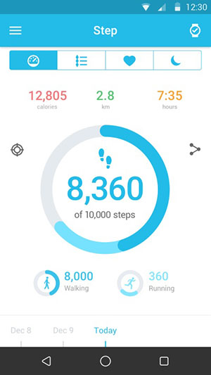

Pogosta vprašanja o uri WiFi
Vaše pametne ure MOVETIME ni mogoče zaznati.
- Če je funkcija Bluetooth onemogočena, jo vklopite.
- Omogočite storitev Bluetooth, da boste lahko iskali naprave.
- Če je funkcija Bluetooth vklopljena, a še vedno ne deluje, znova zaženite pametno uro ali telefon.
- Če je bila pametna ura seznanjena z drugim telefonom, ponastavite pametno uro ali pa v aplikaciji MOVETIME in strani Bluetooth v sistemu telefona nastavite, da bo ura »pozabljena«.
Kako dobim čimbolj točne rezultate srčnega utripa?
Za čimbolj točne rezultate URO tesno zapnite okoli zapestja. Tudi v idealnih pogojih URA morda ne more odčitati zanesljivega srčnega utripa pri vsakem uporabniku. Pri majhnem odstotku uporabnikov različni dejavniki onemogočajo odčitavanje srčnega utripa. Nekaj stvari lahko pomaga URI pri doslednih in čimbolj točnih odčitkih srčnega utripa:
- Zadnja stran URE mora biti v stiku s kožo.
- URA mora biti tesno zapeta okoli zapestja, vendar pustite nekaj prostora, da lahko koža diha, in naj senzorji opravijo svoje delo.
- URO lahko tesno zapnete med vadbo in jo po vadbi razrahljate.
- Senzorji delujejo le, če URO nosite na vrhu zapestja.
Če se URA premika ali srčnega utripa ni mogoče izmeriti, zatesnite pas močneje. URA mora biti zapeta tesno, vendar vam mora biti še vedno udobno.

Kaj lahko storim, ko se URA ne odziva?
Za 8 sekund pritisnite in zadržite tipko za vklop/izklop, da znova zaženete URO. To naredite le v nujnih primerih.
Zakaj včasih URA zavibrira nepričakovano?
- Preverite, ali ste prejeli obvestilo.
- Prepričajte se, da URA ni preveč oddaljena od naprave.
Kaj lahko storim, ko vibriranje ne deluje?
- Napolnite in se prepričajte, da baterija deluje.
- Prepričajte se, da povezava med URO in napravo ni prekinjena.
Kaj lahko storim, ko se URA ne polni?
- Preverite, ali so kontakti na polnilni postaji poravnani s kontakti na zadnji strani ure.
- Prepričajte se, da je kabel USB dobro vstavljen v vrata USB.
- Če je baterija URE popolnoma prazna, traja nekaj časa, da se baterija in sistem aktivirata.
Zakaj se poraba baterije po namestitvi aplikacije MOVETIME ter vzpostavitvi povezave med URO in napravo poveča?
To je običajno in poraba vključuje:
- Ohranjanje povezave med URO in napravo.
- Prenos datotek med URO in napravo.
- Prekinitev povezave, iskanje naprave in ponovna vzpostavitev naprave.
Koliko nizkoenergetskih naprav BT 4.0 (BLE) lahko povežem z napravo?
Hkrati lahko z napravo povežete samo 1 napravo BLE.
Kaj lahko storim, ko URA pogosto prekinja povezavo z napravo?
- Prepričajte se, da sistemsko orodje ni zaustavilo aplikacije MOVETIME. Če se je to zgodilo, znova zaženite aplikacijo.
- Prepričajte se, da je komunikacija med URO in napravo normalna.
a) Preverite aplikacijo MOVETIME na telefonu. Če URA vzpostavi povezavo z napravo, je v desnem zgornjem kotu prikazana ikona . Če URA ne vzpostavi povezave, sespremeni v
na sredini ikone.

b) Če na URI vidite ikono Bluetooth, pomeni, da se URA ni uspela seznaniti z vašo napravo
Kako lahko ponastavim URO na tovarniške nastavitve?
- Če vam noben od zgornjih odgovorov ni pomagal pri odpravljanju težave, poskusite ponastaviti URO.
- V aplikaciji MOVETIME se dotaknite
in nato Watch (Ura) > Settings (Nastavitve) > Factory Reset (Ponastavitev tovarniških nastavitev) ter ponastavite URO.
- Tipko za vklop/izklop pritisnite za 10 sekund, da ponastavite URO.
Kaj lahko storim, če URA ne more sprejemati obvestil?
Če želite, da vaša URA prejema obvestila MOVETIME, upoštevajte spodaj navedena navodila.
- Pojdite v aplikacijo MOVETIME > Watch (Ura) > Notifications (Obvestila), omogočite obvestila iz določene želene aplikacije.
- Omogočite samodejni zagon aplikacije MOVETIME ob vklopu telefona.
- Aplikacijo MOVETIME dodajte na beli seznam ali seznam zaščitenih aplikacij.
- Izklopite morebitne nastavitve varčevanja z energijo, ki onemogočajo aplikacijo, ko je zaslon zaklenjen.
- Pojdite na Settings (Nastavitve) > Notifications (Obvestila) > Notification access (Dostop do obvestil) > MOVETIME (Dostop se lahko razlikuje glede na blagovno znamko). Onemogočite obvestila MOVETIME in jih nato znova omogočite.
- Znova zaženite pametni telefon.
Kako nadzirati spanje?
URO nosite med spanjem ter zagotovite, da je URA vklopljena in ima dovolj napajanja.
Kaj lahko naredim, če v moji uri pride do težav s preverjanjem pristnosti Wi-Fi?
Pritisnite in zadržite, da se prikaže vmesnik ter nastavite, da se trenutno omrežje Wi-Fi pozabi, nato se znova dotaknite možnosti Wi-Fi in vnesite pravilno kodo v telefon.